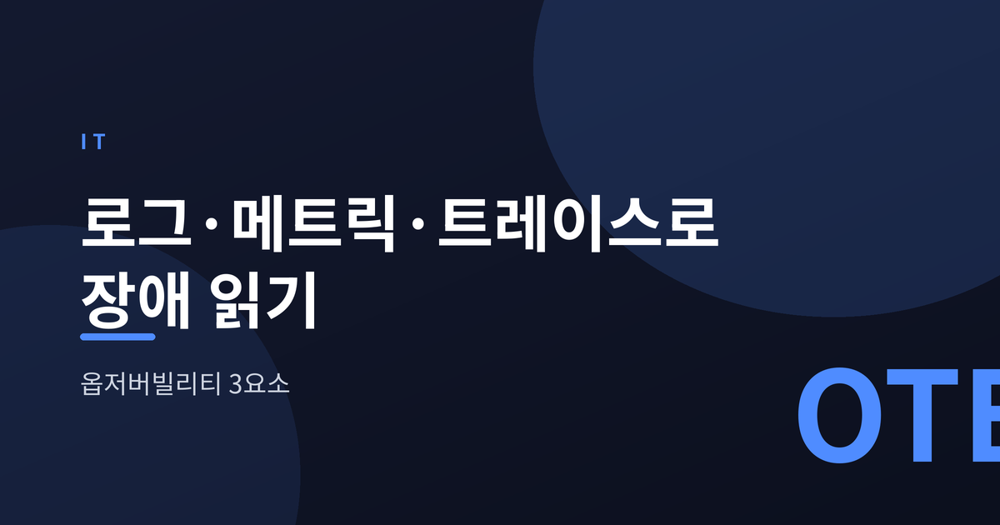
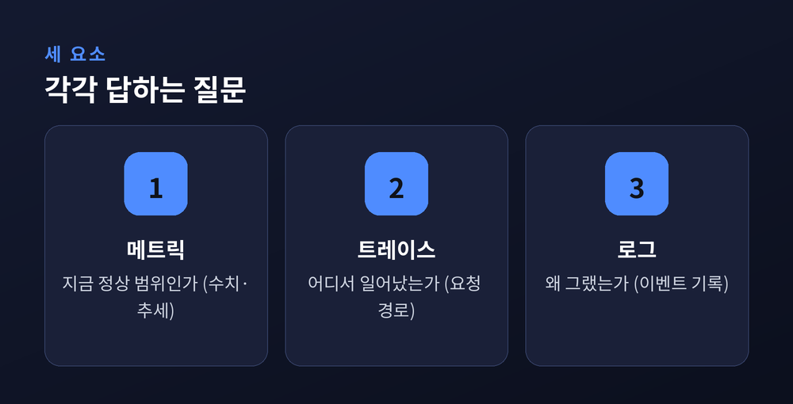
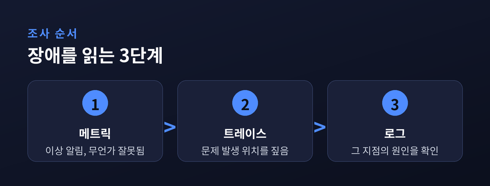
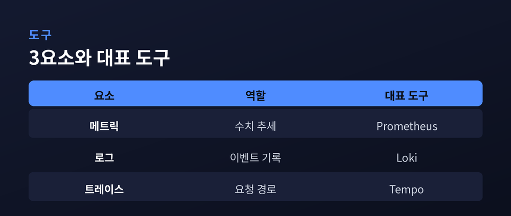

로그·메트릭·트레이스로 장애를 읽는 법

이번 글에서는 옵저버빌리티, 우리말로 관측 가능성을 정리해 보겠습니다. 서버가 갑자기 느려지거나 에러가 났을 때, 그 원인을 어떻게 짚어 나가는지가 핵심입니다. 흔히 말하는 세 요소, 로그·메트릭·트레이스를 차례로 살펴보겠습니다.
모니터링은 미리 정해 둔 지표가 정상인지 지켜보는 일입니다. CPU가 몇 퍼센트인지, 응답이 몇 초 걸리는지 미리 알림을 걸어 둡니다.
옵저버빌리티는 한 걸음 더 나갑니다. 예상하지 못한 문제가 터졌을 때, 시스템이 남긴 흔적만으로 안에서 무슨 일이 벌어졌는지 되물을 수 있는 능력입니다.
예전엔 정해진 대시보드만 들여다봤습니다. 지금은 시스템이 뱉어 내는 신호를 파고들어 원인을 캐냅니다.
그 신호가 바로 세 가지, 로그와 메트릭과 트레이스입니다.
세 요소는 서로 다른 질문에 답합니다.
메트릭은 수치입니다. CPU 사용률, 응답 시간, 에러율처럼 시간에 따라 변하는 값을 재고 추세를 보여 줍니다. "지금 정상 범위인가"에 답합니다.
로그는 기록입니다. 언제 어떤 이벤트와 에러가 났는지 시간순으로 남긴 문장입니다. "왜 그랬는가"의 실마리를 담습니다.
트레이스는 경로입니다. 하나의 요청이 여러 서비스를 거쳐 흐른 자취를 이어 붙여, 어디서 느려지고 막혔는지 보여 줍니다. "어디서 일어났는가"에 답합니다.

세 신호는 따로 노는 게 아니라 한 흐름으로 이어집니다.
먼저 메트릭이 이상을 알립니다. 에러율이 튀거나 응답이 느려지면 경보가 울립니다.
다음으로 트레이스가 위치를 짚습니다. 문제의 요청이 어느 서비스, 어느 구간에서 지체됐는지 보여 줍니다.
마지막으로 로그가 이유를 확인해 줍니다. 그 지점에서 실제로 어떤 에러가 났는지 세부를 읽습니다.
메트릭이 "무언가 잘못됐다"고 알리고, 트레이스가 "여기다"라고 가리키고, 로그가 "이래서다"라고 설명하는 셈입니다.
세 신호를 시각·서비스 이름·요청 식별자 같은 공통 정보로 엮으면, 도구 사이를 오갈 필요 없이 알림에서 진단까지 바로 이어집니다. 복구까지 걸리는 시간이 그만큼 줄어듭니다.

2026년 현재 가장 큰 흐름은 특정 회사에 묶이지 않는 표준입니다.
오픈텔레메트리(OpenTelemetry)는 세 신호를 한 규격으로 수집하는 표준입니다. CNCF 프로젝트로 성숙 단계에 접어들었고, 많은 조직이 이미 쓰거나 옮겨 가는 중입니다.
수집된 데이터는 흔히 이렇게 나뉩니다. 메트릭은 프로메테우스(Prometheus)가 모으고, 로그와 트레이스는 각각 별도 저장소가 받으며, 이를 그라파나(Grafana) 같은 화면에서 대시보드로 봅니다.
굳이 셋을 다 직접 짤 필요는 없습니다. 오픈소스 조합으로도, 통합 상용 플랫폼으로도 꾸릴 수 있습니다.

이 구조에도 아쉬운 점은 있습니다.
메트릭, 로그, 트레이스가 각기 다른 화면에 흩어지면 세 개의 사일로가 됩니다. 엔지니어는 창을 옮겨 다니며 손으로 맞춰 봐야 합니다.
데이터가 많아지면 비용도 만만치 않습니다. 특히 마이크로서비스에서는 로그가 서비스 수만큼 곱절로 불어납니다. 태그 종류가 지나치게 많아지면 쿼리도 느려집니다.
그래서 근래에는 세 신호를 하나의 저장소로 묶어 한자리에서 상관 분석하려는 흐름이 뚜렷합니다. 배포나 설정 변경 같은 이벤트를 더해 네 요소로 보기도 합니다.
세 기둥은 출발점이지 정답 그 자체는 아닙니다.
끝으로 한 마디만 더 드리겠습니다. 옵저버빌리티는 결국 시스템에게 질문을 던지는 일입니다.
— "무엇이, 어디서, 왜"를 각각 메트릭·트레이스·로그가 나눠 답한다고 기억하시면 충분합니다.
장애 앞에서 당황스러우셨다면, 이 세 질문의 순서부터 떠올려 보시길 권합니다.